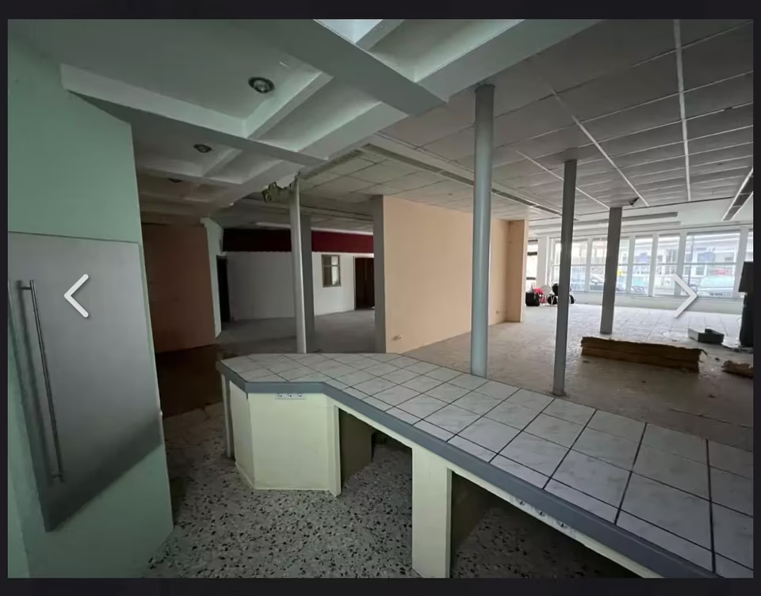
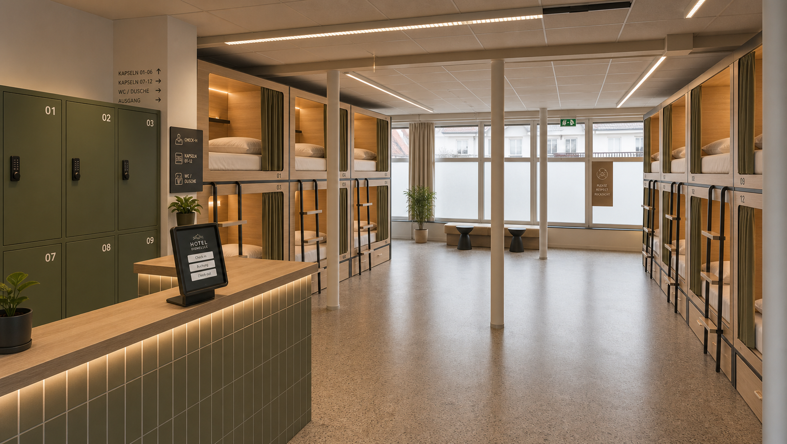
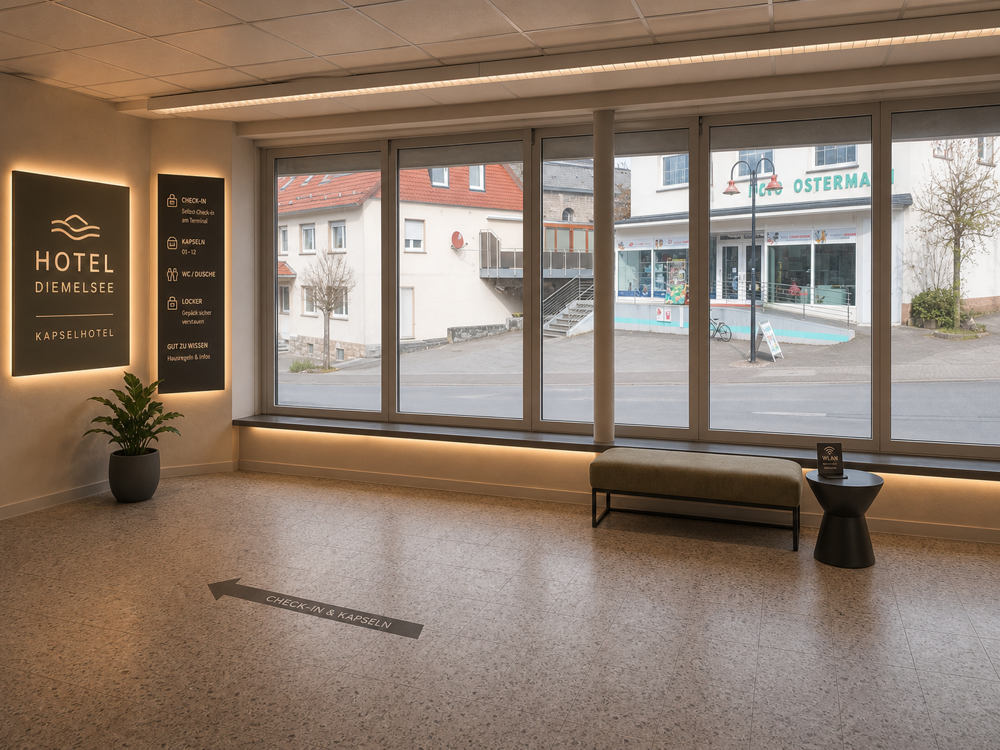
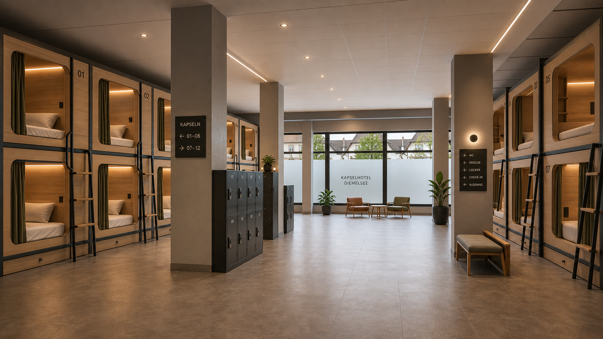
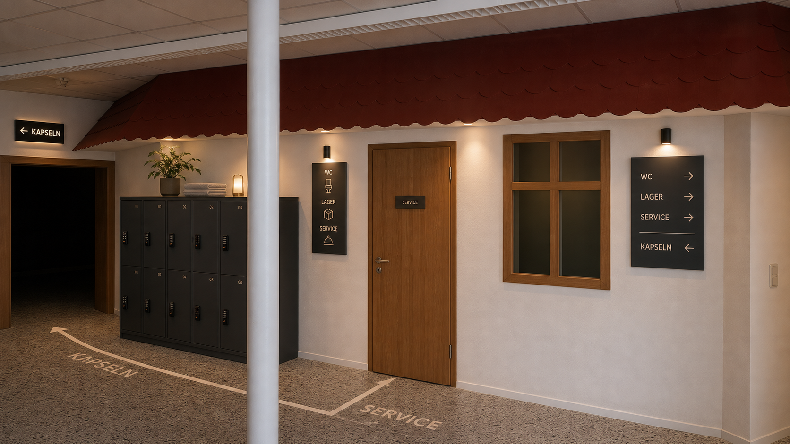

Projektstatus und Prioritaeten
Die Umsetzung folgt keinem offenen Bauchgefuehl, sondern einer Reihenfolge: erst Klarheit zu Nutzung, Brandschutz und Finanzierung, dann Detailplanung und Umbau.
Meilenstein-Timeline
Mit absoluten Zeitpunkten wird sichtbar, welche Themen bereits vorbereitet sind und welche Entscheidung als naechstes ansteht.
07.05.2026
Projektunterlagen finalisiert
Businessplan, Betriebskonzept, Investitionsplan, Rentabilitaets- und Liquiditaetsunterlagen wurden auf einen konsistenten Stand gebracht.
Naechster Entscheidungspunkt: Unterlagen in Bank- und Bauamtgespraeche ueberfuehren.
Mai 2026
Bauamt-Vorabklaerung und Brandschutzansprache
Fragen zu Nutzungsaenderung, Rettungswegen, Stellplaetzen, Sanitarkapazitaet und brandschutztechnischen Mindestanforderungen werden strukturiert adressiert.
Naechster Entscheidungspunkt: Umfang des formellen Bauantrags und Bedarf externer Fachplanung absichern.
Juni 2026
Bank-, WIBank- und KfW-Gespraeche
Das Projekt wird mit klarer Betreiberrolle, nachvollziehbarer Mittelverwendung und Szenariorechnung in Finanzierungsgespraeche gebracht.
Naechster Entscheidungspunkt: bevorzugte Finanzierungsstruktur und Zusatzunterlagen festlegen.
Juni bis Juli 2026
Angebote und Detailplanung
Kapseln, Elektro, Sanitaer, Brandschutz, Zutritt und Innenausbau werden in belastbare Angebote und eine finalisierte Mittelverwendung uebersetzt.
Naechster Entscheidungspunkt: finale Investitionssumme freigeben und Reserve absichern.
Nach Finanzierungszusage
Umbau, Abnahme, Vermarktung
Nach Genehmigung und Finanzierung folgt die bauliche Umsetzung mit anschliessender Inbetriebnahme und direkter Vermarktung ueber Website, Google und Plattformen.
Naechster Entscheidungspunkt: Startdatum und operative Einfuehrung verbindlich setzen.
Das Konzept
Geplant ist ein kompaktes Micro-Lodging-Format fuer die Luecke zwischen Camping und klassischer Hotellerie. Die Startgroesse bleibt bewusst klein und kontrollierbar.
12 Kapseln im Pilotbetrieb
Der erste Ausbau konzentriert sich auf das Erdgeschoss des bestehenden Gewerbeobjekts. Die 12 Kapseln werden entlang einer zentralen Trennwand in einer 4+4+4-Struktur platziert. Dadurch bleibt die Fensterfront frei, die Wegefuehrung klar und die Rueckzone fuer Service, Lager und Sanitarthemen nutzbar.
Das Angebot richtet sich an Wanderer, Radfahrer, Eventgaeste aus Willingen, Monteure, Solo-Reisende und kurze Durchreiseaufenthalte. Die Kapseln bieten Privatsphaere ohne den Kostenblock eines Vollhotels.
Pilotlogik
12 / 12
12 Kapseln und 12 Gastbetten bleiben weit unter der hessischen Sonderbau-Schwelle von mehr als 30 Gastbetten.
500 EURMonatliche Nettokaltmiete laut aktuellem Vertragsstand - ein wesentlicher Hebel fuer die niedrige Fixkostenbasis.
Standort und Bestand
Das Projekt baut auf einem vorhandenen Objekt auf. Das ist kein beliebiger Standortvorteil, sondern ein zentraler Teil der Wirtschaftlichkeitslogik.
Objektdaten
| Wohnflaeche | 250 qm |
| Gewerbeflaeche | 400 qm |
| Grundstueck | 1.400 qm |
| Mietbeginn | 01.06.2026 |
| Vertragslaufzeit | 15 Jahre |
| Monatliche Nettokaltmiete | 500 EUR |
Standortlogik
Diemelsee verbindet touristische Nachfrage am See mit der Naehe zu Willingen als starkem Event- und Wintersportanker. Die Umnutzung eines bestehenden Gewerbebereichs verkuerzt die Logik bis zum Betrieb: keine neue Grundstuecksentwicklung, kein teurer Neubau, keine beliebige Projektstory.
Genau diese Kombination aus vorhandener Flaeche, niedriger Miete und regionaler Nachfrage macht das Vorhaben fuer ein Pilotformat interessant.
Grundriss 4+4+4
Die Konzeptskizze zeigt nicht nur die Kapseln, sondern auch die Logik dahinter: freie Fensterfront, klare Rueckenlinie, nachvollziehbare Wege und eine definierte Rueckzone.
Freie Frontzone Tageslicht, Orientierung und ein offener Ankunftsbereich statt blockierter Fensterlaibungen.
Spine-Prinzip Die zentrale Trennwand schafft Ordnung, Rueckseitenfuehrung und eine besser lesbare Wegefuehrung.
Rueckzone Sanitaer, Lager und Technik bleiben als funktionale Servicezone gebuendelt.
Prueffelder Aufmass, Mindestbreiten, Fluchtwege, Brandschutzmaterialien und Stellplatznachweis.
Flaechennutzung in Schichten
Der Grundriss wird nicht nur ueber Betten erklaert. Fuer Banken und Baugespraeche ist wichtiger, welche Funktion welche Flaeche bekommt und welche Punkte vor Umbau geprueft werden.
12 Kapseln als 4+4+4-System mit hellen Holzmodulen, dunklem Rahmen, Leiter und Vorhanglogik.
Klare Gangzonen zwischen Kapseln, Trennwand und Rueckzone. Mindestbreiten bleiben Prueffeld.
Freie Fensterfront, Orientierung, Self-Check-in, kurze Wartezone und nachvollziehbare Wege.
Sanitaer, Lager, Reinigung, Technik und Wertsachenlocker werden in der Rueckzone gebuendelt.
Fluchtwege, Materialanforderungen, Rauchwarnung, Beschilderung und Abnahme werden frueh geklaert.
Vorher und Nachher
Die Visualisierungen sind jetzt auf eine einheitliche Materiallogik gebracht: helles Holz, dunkler Rahmen, warme LED-Linien, einfache Leitern und Vorhang-Privatsphaere. Grundlage ist das vorgegebene Bunk-Design.

Vorher
Nachher
Ankunft und Kapselzone
Theke wird Self-Check-in und Orientierungspunkt
Die bestehende Thekenlogik bleibt als Anker erhalten, wird aber mit digitalem Check-in, Lockern und sichtbarer Kapselzone in einen professionellen Empfang uebersetzt.
 Vorher
Vorher

Nachher
Freie Frontzone
Die Fensterfront wird nicht zugestellt
Die Vorderseite bleibt offen fuer Licht, Orientierung und eine kleine Wartezone. Das staerkt den ersten Eindruck und macht die Wegelogik im Raum klarer.

Kernmotiv
Kapselzone mit einheitlichem Bett-Design
Die Betten folgen derselben Sprache wie die Referenz: helles Holz, dunkler Rahmen, Leiter, Vorhang und warme Beleuchtung.

Service
Rueckzone fuer WC, Lager und Lockers
Die Rueckseite wird nicht dekorativ erzaehlt, sondern als betriebsnotwendige Flaeche fuer Gaeste- und Reinigungsprozesse sichtbar.
Die Visualisierungen sind Konzeptmockups. Endgueltige Masse, Gangbreiten, Materialien, Brandschutz und Sanitarkapazitaet werden vor Umbau fachlich geprueft.
Genehmigung und Bau
Finanzierbarkeit haengt direkt an Genehmigungsfaehigkeit. Deshalb werden Bau- und Brandschutzfragen als fruehe Projektentscheidungen behandelt und nicht als spaeteres Detail.
Nutzungsaenderung
Zu klaeren ist, ob und mit welchen Unterlagen die Umnutzung des Gewerbebereichs in einen kleinen Beherbergungsbetrieb formell einzureichen ist.
Rettungswege und Materiallogik
Trennwand, Kapselmaterialien, Rauchwarnung, Kennzeichnung und Fluchtwegsituation muessen fachlich belastbar zusammenpassen.
Nur nach Klarheit und Finanzierung
Verbindliche Umbauauftraege folgen erst, wenn Genehmigungsweg, Kostenrahmen und Finanzierungsstruktur freigegeben sind.
Partner gesucht
Die naechsten Gespraeche muessen das Projekt belastbarer machen.
Gesucht werden Banken, Foerderstellen, Fachplaner und lokale Partner, die aus dem Konzept einen genehmigungs- und finanzierungsfaehigen Pilotbetrieb machen.
Gesucht
Banken, WIBank/KfW-Gespraeche, Fachplanung, lokale Vertriebspartner
Aktueller Fokus
Genehmigungsklaerung, Angebotsphase, Finanzierungsstruktur
Projektformat
12-Kapsel-Pilot im bestehenden Gewerbebestand